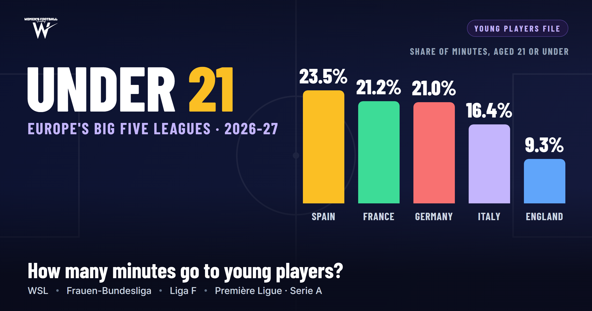

Under-21s in Europe's Big Five Leagues: Who Is Actually Getting Minutes?
In England, 9.3% of the minutes played go to players aged 21 or under; in Spain it is 23.5%. We went through 327 match reports: the leagues and clubs that trust youth most, the ever-presents, the scorers and a goalkeeper keeping goal at 17.

Everyone says they believe in young players. But who actually gets on the pitch? We went through the opening weeks of the season in Europe's five biggest women's leagues match by match: 327 match reports and 347 players aged 21 or under who have played.
First the leagues, then the clubs. Then the names: the young players who have played every minute, the ones making a difference with goals and assists, and the most-used players aged 19 or under.
League by league: how many minutes go to young players?
Five leagues, one measure: the share of all minutes played by players aged 21 or under.
The biggest gap is in England. Only 9.3% of the minutes played in the WSL went to players aged 21 or under. In Spain the figure is 23.5%, in France 21.2%, in Germany 21.0%. Italy sits in between at 16.4%.
It may be no coincidence that the league with the biggest squad budgets gives young players the least time: a club that can pay for a finished player does not have to be patient with a young one. In Spain and Germany, nobody is surprised to see a 20-year-old in the starting eleven.
Five leagues, two measures
Share of minutes, aged 21 or under
Players aged 21 or under with at least 450 minutes
Age is match-day age. League pages: WSL, Frauen-Bundesliga, Liga F, Première Ligue, Serie A.
Counting names tells the same story. The number of players aged 21 or under with at least 450 minutes is 33 in Liga F, 32 in the Frauen-Bundesliga and 14 in the WSL. France has 16 and Italy 10; fewer matches with reports have been played there, so the minutes add up more slowly.
Clubs: who trusts young players?
The share of a club's league minutes played by players aged 21 or under.
One club stands clear at the top: Deportivo A Coruña. Players aged 21 or under were on the pitch for 61.5% of its minutes this season, nearly one player in every two. Behind it come Granada CF (44.0%), RC Lens and Madrid CFF.
The top eight has 3 clubs from Spain, 3 from Germany and 2 from France. None from England or Italy.
Clubs: who trusts young players?
THE 8 CLUBS GIVING YOUNG PLAYERS THE MOST TIME
- 1Deportivo A CoruñaLiga F61.5%
- 2Granada CFLiga F44.0%
- 3RC LensPremière Ligue41.1%
- 4Madrid CFFLiga F41.1%
- 5SC FreiburgFrauen-Bundesliga40.8%
- 6TSG HoffenheimFrauen-Bundesliga39.6%
- 7Le Havre ACPremière Ligue38.8%
- 8Hamburger SVFrauen-Bundesliga38.5%
THE 5 GIVING THEM THE LEAST
- ·Como 1907Serie A0.0%
- ·BrightonWSL0.0%
- ·Olympique de MarseillePremière Ligue0.1%
- ·CD TenerifeLiga F0.2%
- ·Manchester UnitedWSL0.5%
Share: minutes played by players aged 21 or under, out of all minutes in the club's league matches.
At the other end are clubs that give young players almost no time at all: Como 1907, Brighton, Olympique de Marseille, CD Tenerife and Manchester United. At these five, players aged 21 or under account for less than one per cent of minutes. England's youngest-playing side is Chelsea, at 24.1%.
Not a minute on the bench
7 players aged 21 or under who have played every minute of their team's league matches.
Whatever a player's age, there is no clearer message from a coach than this: never being taken off. 7 young players have managed it. Svea Stoldt (Hamburger SV) has been on the pitch for all 990 minutes and has scored 5 goals on top.
Two goalkeepers are on the list: Lina Altenburg (Eintracht Frankfurt) and Sofía Fuente (Deportivo Alavés). The goal is the position coaches are slowest to hand to a young player; at 21, these two are already their team's number one.
On the pitch every minute
- ·Svea StoldtHamburger SV · Frauen-Bundesliga · aged 20 · Defender990min
- ·Lina AltenburgEintracht Frankfurt · Frauen-Bundesliga · aged 21 · Goalkeeper990min
- ·Marie SteinerTSG Hoffenheim · Frauen-Bundesliga · aged 21 · Forward990min
- ·Daniela MiñambresGranada CF · Liga F · aged 20 · Midfielder900min
- ·RebecaLogroño United · Liga F · aged 21 · Defender900min
- ·Sandra VillafañeMadrid CFF · Liga F · aged 21 · Defender900min
- ·Sofía FuenteDeportivo Alavés · Liga F · aged 21 · Goalkeeper900min
90 minutes in every league match of their team with a match report.
Doing the talking with goals and assists
The 10 players aged 21 or under with the most goals + assists.
The star of this section is clear: Felicia Schröder (Real Madrid). At 19, she has scored 8 goals in just 483 minutes, roughly one goal every 60 minutes.
Giada Pellegrino Cimò (AS Roma) has also done a lot with little time: 4 goals and 3 assists in 299 minutes. Among those playing long minutes and still producing, Signe Gaupset (Tottenham Hotspur) leads the way with 4 goals and 3 assists in 931 minutes.
Goals + assists
- ·Felicia SchröderReal Madrid · Liga F · aged 19 · Forward8+1483 min
- ·Giada Pellegrino CimòAS Roma · Serie A · aged 20 · Forward4+3299 min
- ·Signe GaupsetTottenham Hotspur · WSL · aged 21 · Midfielder4+3931 min
- ·Lucie CalbaFC Fleury 91 · Première Ligue · aged 21 · Forward5+1428 min
- ·Svea StoldtHamburger SV · Frauen-Bundesliga · aged 20 · Defender5+1990 min
- ·Cora ZicaiVfL Wolfsburg · Frauen-Bundesliga · aged 21 · Forward4+2604 min
- ·Delice BoboyRB Leipzig · Frauen-Bundesliga · aged 20 · Forward4+1957 min
- ·Anny Kerim-LindlandVfL Wolfsburg · Frauen-Bundesliga · aged 19 · Forward3+2198 min
- ·Shana ChossenotteFC Fleury 91 · Première Ligue · aged 21 · Forward3+2592 min
- ·Momoko TanikawaBayern München · Frauen-Bundesliga · aged 21 · Midfielder3+2721 min
Goals and assists as recorded in the match reports.
Aged 19 or under: the most-used players
Players aged 19 or under with at least 300 minutes, by minutes played.
The most striking name on this list is Anna Reimann. SC Freiburg trusted its goal to a 17-year-old, and she has played 900 minutes. The same club has 3 names on this list; the club ranking already told us that its faith in youth is no accident.
Emma Moreno (SD Éibar) has started all 11 of her matches and tops the list with 972 minutes.
Aged 19 or under, most minutes
- ·Emma MorenoSD Éibar · Liga F · aged 19 · Defender972min
- ·Anna ReimannSC Freiburg · Frauen-Bundesliga · aged 17 · Goalkeeper900min
- ·Luzie ZähringerVfB Stuttgart · Frauen-Bundesliga · aged 18 · Defender896min
- ·Maj SchneiderSC Freiburg · Frauen-Bundesliga · aged 19 · Midfielder861min
- ·Sydney SchertenleibFC Barcelona · Liga F · aged 19 · Midfielder696min
- ·Emma MemmingerSC Freiburg · Frauen-Bundesliga · aged 19 · Defender666min
- ·Emmy LefèvreLe Havre AC · Première Ligue · aged 17 · Midfielder634min
- ·Emilie HoltMadrid CFF · Liga F · aged 19 · Defender631min
- ·Paula RedruelloDeportivo A Coruña · Liga F · aged 19 · Midfielder602min
- ·Emilie MeceNapoli · Serie A · aged 19 · Forward584min
At least 300 minutes.
Many of these names will be talked about in the transfer market within a year or two. The site has match data from more than twenty leagues; you can build the same filters yourself for every league, by position and age.
Text and calculations: WFS Analysis Desk. Source: SoccerDonna match reports (as of 25 November 2026). Every WSL and Frauen-Bundesliga match has a report; in Liga F 6, in the Première Ligue 6 and in Serie A 9 matches have no report, and their minutes are not counted.
More files